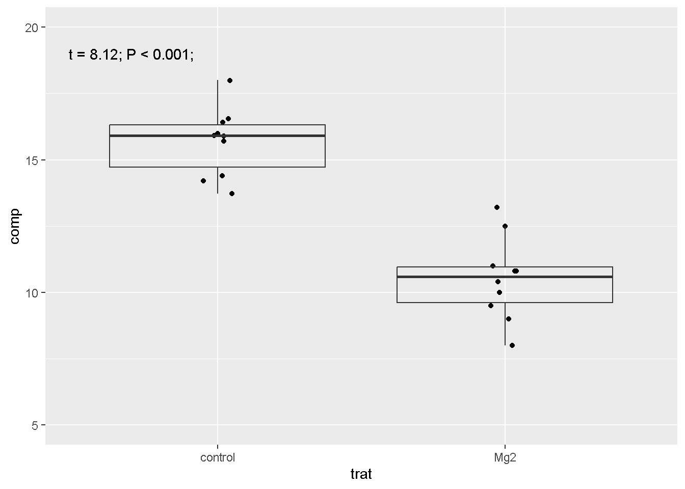
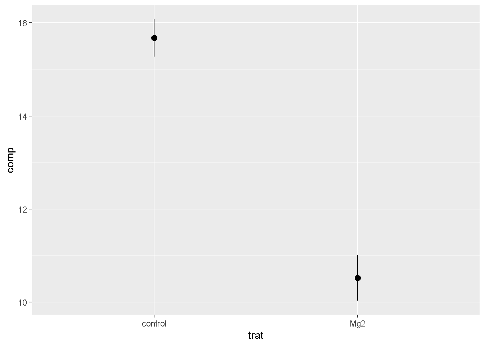

library(tidyverse)
library(readxl)
mg <- read_excel("dados-diversos.xlsx")Iniciando teste T
Importar dados
mg |>
ggplot(aes(trat, comp))+
geom_jitter(width =0.05)+
geom_boxplot(fill = NA,
outlier.colour = NA)+
ylim(5, 20)+
annotate(geom = "text",
x = 0.7, y = 19,
label = "t = 8.12; P < 0.001;")
mg |>
ggplot(aes(trat, comp))+
stat_summary(fun.data = "mean_se")
mg2 <- mg |>
pivot_wider(1,
names_from = trat,
values_from = comp)t <- t.test(mg2$Mg2, mg2$control)
t
Welch Two Sample t-test
data: mg2$Mg2 and mg2$control
t = -8.1549, df = 17.354, p-value = 2.423e-07
alternative hypothesis: true difference in means is not equal to 0
95 percent confidence interval:
-6.490393 -3.825607
sample estimates:
mean of x mean of y
10.520 15.678 library(report)
report(t)Effect sizes were labelled following Cohen's (1988) recommendations.
The Welch Two Sample t-test testing the difference between mg2$Mg2 and
mg2$control (mean of x = 10.52, mean of y = 15.68) suggests that the effect is
negative, statistically significant, and large (difference = -5.16, 95% CI
[-6.49, -3.83], t(17.35) = -8.15, p < .001; Cohen's d = -3.65, 95% CI [-5.12,
-2.14])Usando o pacote infer:
library(infer)
mg |>
t_test(comp ~ trat,
order = c("control", "Mg2"))# A tibble: 1 × 7
statistic t_df p_value alternative estimate lower_ci upper_ci
<dbl> <dbl> <dbl> <chr> <dbl> <dbl> <dbl>
1 8.15 17.4 0.000000242 two.sided 5.16 3.83 6.49https://www.datanovia.com/en/lessons/t-test-in-r/